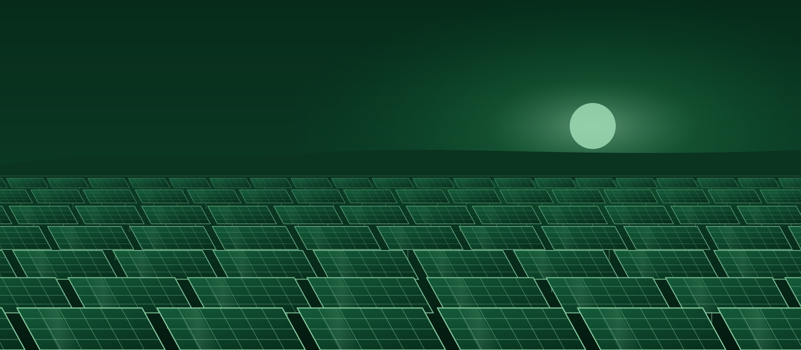

HomeResources
Resources and links
Official websites, university services, conference pages and publications connected to the Centre.
Supervising body and network
The Energy Commission of Nigeria and its research centres.
Energy Commission of NigeriaThe Centre's supervising bodyenergy.gov.ngECN research centresThe six centres and their areas of researchenergy.gov.ngECN leadershipThe Commission's management and centre directorsenergy.gov.ngHydropower research centreNational Centre for Hydropower Research and Development, Ilorinunilorin.edu.ng
University of Nigeria
Our host university's services.
University of Nigeria, NsukkaThe University's official websiteunn.edu.ngCBT exams status tableComputer-based test timetableunn.edu.ngUNN staff directorySearch staff of the Centreunn.edu.ngNCERD on unn.edu.ngThe Centre's university web pageenergyresearch.unn.edu.ngNCERD websiteThe Centre's own websitencerd-unn.gov.ng
Conferences and training
Our conference series and training recognition.
Publications
Research outputs from the Centre.
Energy Solutions for Attainment of Sustainable Development in AfricaProceedings of the 5th conference, 2023researchgate.netEnergy technologies for sustainable rural agriculture in NigeriaSolar brooders, incubators and PV systems developed at NCERDresearchgate.netRenewable energy penetration in South-East NigeriaSurvey by NCERD researchersresearchgate.net